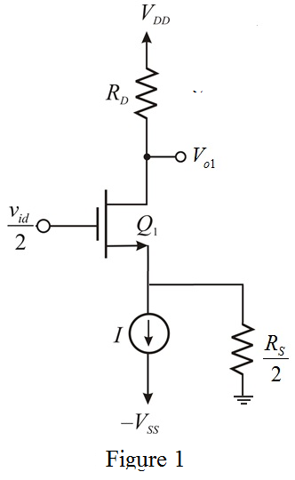
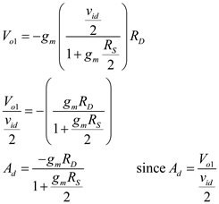

Step 1:
Refer to the circuit diagram of differential amplifier in Figure P8.21 in the textbook.
Draw the differential half circuit for the differential amplifier.

Step 2:
Draw the small signal equivalent circuit.
Step 3:
Define differential gain.
Apply Kirchhoff’s voltage law around input loop.
Solve for  .
.

Output voltage of the half circuit is,

Substitute for  in the equation.
in the equation.

Thus, differential gain of the half circuit for the differential amplifier  is .
is .
Step 4:
Gain at

is,
Thus, differential gain at  is .
is .
Step 5:
Recall the differential gain of the half circuit.
Equate the differential gain to half of differential gain at  .
.
Solve for  .
.
Thus, source resistance of the differential half circuit to reduce the differential gain at is .